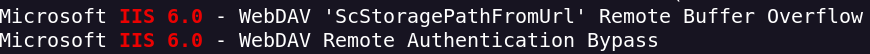
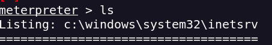
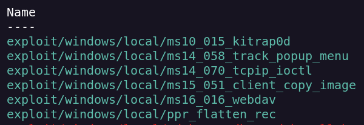
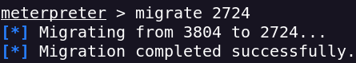

The engagement began with a full TCP port scan to identify exposed services on the target system.
nmap -sVC -p- --open -sS --min-rate 5000 -v -n -Pn -oN grandpa_scan <IP>The scan revealed that port 80 was open, running an HTTP service identified as Microsoft IIS httpd 6.0.
Given the outdated version of IIS, a search was performed using searchsploit, which returned multiple known vulnerabilities affecting this service.

Metasploit provides a module capable of exploiting Microsoft IIS 6.0 through a remote buffer overflow vulnerability. This module was selected and executed against the target.
After successful exploitation, a Meterpreter session was obtained.

Once access was established, local user enumeration showed the presence of the Harry and Administrator accounts. However, direct access to either account was not possible at this stage.
Since there was no immediate privilege escalation path, the Metasploit local exploit suggester module was used to identify potential vulnerabilities that could be leveraged.

The module reported several valid local exploits for the system. At this point, a useful technique was to migrate the Meterpreter session into a process running under the NT AUTHORITY\NETWORK SERVICE context.

Based on the suggested options, the following local privilege escalation exploit was selected.
exploit/windows/local/ms14_070_tcpip_ioctlAfter executing the exploit, the session was successfully elevated, granting administrative privileges on the target system.